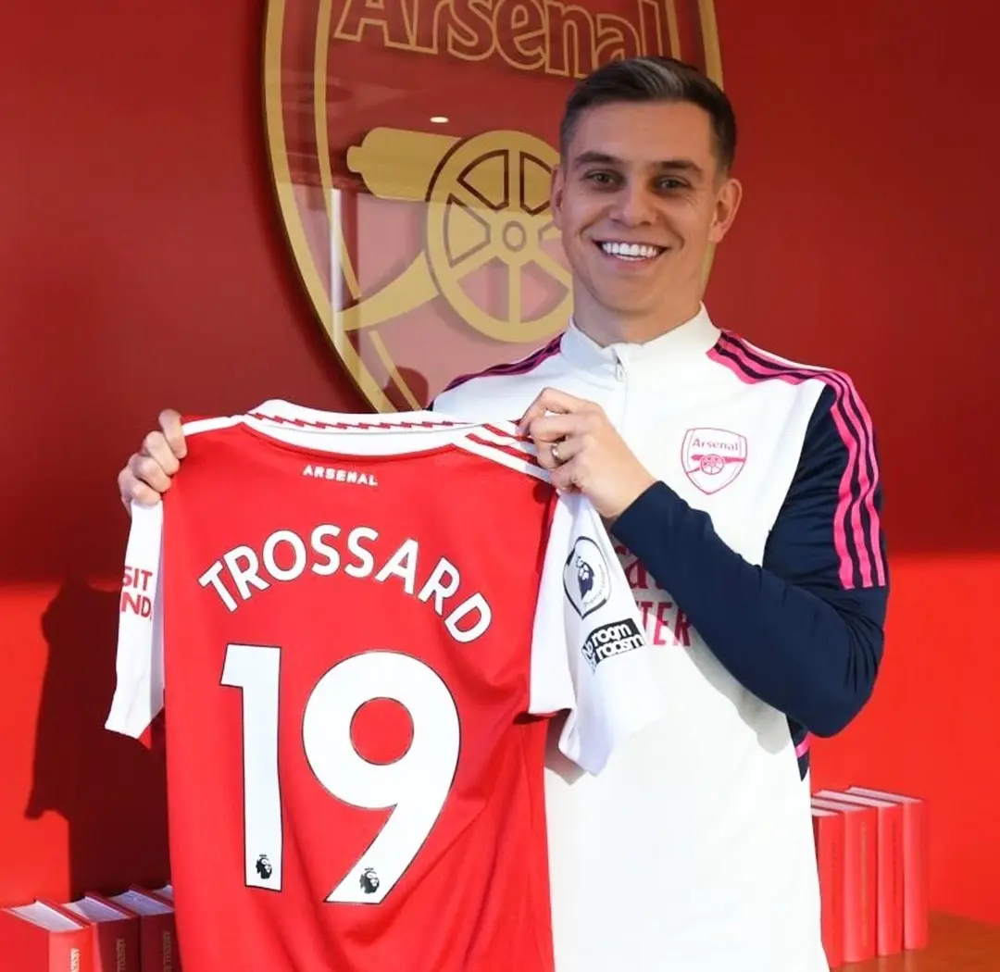

Arsenal · Leandro Trossard
The Man
Between Chapters.
Cảm ơn người không cần câu chuyện thuộc về mình để vẫn trở thành một phần rất đẹp của câu chuyện Arsenal.
Không phải cuộc chia tay nào cũng cần nước mắt mới đủ buồn.
Có những người rời đi rất ồn ào, kéo theo phía sau cả một khoảng trống mà người ta nhìn vô là thấy liền, nhưng cũng có những người bước khỏi câu lạc bộ bằng một cách lặng hơn, không làm cả câu chuyện phải dừng lại, không khiến mọi thứ sụp xuống trong một khoảnh khắc, nhưng càng nhìn lại những gì họ đã làm, ta càng nhận ra họ từng xuất hiện ở quá nhiều chỗ quan trọng trong hành trình này, như thể ở mỗi đoạn Arsenal cần một người bước ra để giữ cho câu chuyện không bị đứt mạch, Leandro Trossard lại ở đó.
Trossard chưa bao giờ là gương mặt lớn nhất trên poster của Arsenal.
Anh không phải đứa trẻ Hale End được cả câu lạc bộ đặt lên vai giấc mơ từ những ngày tăm tối nhất, không phải người đội trưởng với vẻ lãng tử đứng giữa trung tâm mọi đường bóng, không phải bản hợp đồng bom tấn tới để định nghĩa lại trục xương sống của đội bóng, cũng không phải cái tên mà chỉ cần nhắc tới là người ta nghĩ ngay tới một thế hệ. Nhưng bóng đá, cũng như điện ảnh, không bao giờ chỉ được làm nên bởi những nhân vật chính. Có những supporting actor không cần nhiều đất diễn nhất, không cần đứng giữa khung hình lâu nhất, nhưng mỗi lần họ xuất hiện, cả cảnh phim bỗng có thêm nhịp, thêm chiều sâu, thêm một thứ gì đó rất khó gọi tên khiến câu chuyện vận hành mượt hơn.
Trossard ở Arsenal là một người như vậy.
Anh tới vào tháng Một năm 2023, giữa một mùa giải mà Arsenal bắt đầu tin rằng mình có thể đua tới tận cùng, trong một đội bóng trẻ, đẹp, đầy năng lượng nhưng cũng mong manh theo cái cách của những người lần đầu bước gần tới vinh quang. Đó không phải thời điểm dành cho một cầu thủ cần cả hệ thống xoay quanh mình, cũng không phải thời điểm để một bản hợp đồng mất quá nhiều tháng học cách hòa vào câu chuyện. Arsenal lúc đó cần một người hiểu vai nhanh, chạm bóng gọn, di chuyển thông minh, có thể đá nhiều vị trí, có thể bước vào từ cánh trái, số 9 ảo, cánh phải, hoặc bất cứ khoảng trống nào Arteta cần vá lại, và quan trọng nhất là không cần trận đấu thuộc về mình để vẫn làm nó tốt hơn.

Leo đã làm đúng như vậy.
Chỉ vài tháng sau khi tới, anh có ba kiến tạo trong hiệp một trước Fulham ở Craven Cottage, một trận đấu mà nhìn vào có thể người ta sẽ nhớ tới những người ghi bàn trước, nhưng nếu xem kỹ hơn sẽ thấy Trossard gần như len vào mọi khe hở của hàng thủ đối phương bằng sự mềm mại của một cầu thủ hiểu bóng đá nhanh hơn một nhịp. Rồi ở Wembley, khi Arsenal tưởng như sắp thua Man City trong Community Shield, anh lại xuất hiện với một cú sút đổi hướng ở những phút cuối cùng, không phải một bàn thắng đẹp theo kiểu khiến người ta phải tua lại mười lần để ngắm, nhưng là kiểu bàn thắng rất Trossard, đúng lúc, đủ lạnh, đủ lì, và đủ để giữ Arsenal lại trong một trận đấu mà họ cần một chút niềm tin rằng mình có thể đứng ngang hàng với đội bóng mạnh nhất nước Anh.
Có lẽ đó là thứ khiến Trossard được yêu theo một cách rất riêng.
Anh không làm người ta say bằng những pha bóng quá phô trương, cũng không có một phong thái khiến cả sân vận động phải hướng về mình ngay từ cái nhìn đầu tiên, nhưng anh có cái duyên rất lạ của những con người luôn biết cách đứng đúng nơi câu chuyện cần họ nhất. Ở Goodison Park, nơi Arsenal đã ám ảnh quá lâu vì những chuyến đi nặng nề và khó chịu, chính Trossard là người ghi bàn duy nhất để phá đi một cái dớp kéo dài nhiều năm. Trước Bayern Munich ở Champions League, trong một đêm mà Arsenal có lúc bị kéo vào sự choáng ngợp của sân khấu lớn, anh lại bước ra từ ghế dự bị, chọn đúng khoảng trống, dứt điểm đúng nhịp, và kéo đội bóng trở lại với một trận hòa mà khi đó có ý nghĩa nhiều hơn rất nhiều so với tỷ số.
Nhưng nếu phải chọn một khoảnh khắc để gom lại toàn bộ hình ảnh của Trossard ở Arsenal, có lẽ không có gì hợp hơn bàn thắng trước West Ham ở mùa 2025/26, khi cuộc đua vô địch đã đi tới những vòng đấu cuối, khi mỗi điểm số đều nặng như chì, khi Arsenal cần một người không hoảng loạn trước sức nặng của khoảnh khắc, không cần biến trận đấu thành sân khấu của riêng mình, mà chỉ cần xuất hiện đúng lúc và làm đúng điều mà câu chuyện đang cần. Phút 83, từ đường chuyền của Ødegaard, Trossard đưa bóng vào lưới bằng cái lạnh rất quen thuộc của anh, một bàn thắng không ồn ào theo kiểu highlight vĩnh cửu, nhưng đủ để Arsenal vượt qua West Ham, đủ để đội bóng tiến thêm một bước rất dài tới chiếc cúp, và đủ để khiến ngày anh rời đi, người ta hiểu rằng trong hành trình vô địch đó, Leo không chỉ là người nối giữa các chương, mà còn là người đã tự tay viết một trong những dòng quan trọng nhất ở chương cuối.
Có lẽ vì vậy mà Trossard không phải cầu thủ làm người ta nghĩ về những giấc mơ lớn nhất của Arsenal ngay từ đầu, nhưng anh là người đã rất nhiều lần giữ cho những giấc mơ đó còn sống, rồi tới cuối cùng, khi giấc mơ chỉ còn cách vài bước chân, chính anh lại là người đẩy nó thêm một đoạn đủ xa để tất cả có thể tin rằng lần này Arsenal sẽ thật sự đi tới nơi.
Có những bàn thắng không làm nên huyền thoại, nhưng làm thay đổi tâm trạng của cả một mùa giải. Có những pha kiến tạo không nằm ở trang bìa của cuốn sách, nhưng nếu lấy nó ra, chương truyện đó sẽ mất đi sự liền mạch. Có những cầu thủ không bao giờ là nhân vật chính trong ký ức tập thể, nhưng lại hiện diện ở những khúc ngoặt nhỏ tới mức khi họ rời đi, người ta mới bắt đầu xâu chuỗi lại và nhận ra à, hóa ra anh đã ở đó nhiều hơn mình tưởng.
Và có lẽ vì vậy mà Trossard là một lời chia tay rất Arsenal trong giai đoạn này.
Anh không rời đi như một biểu tượng bị xé khỏi trái tim câu lạc bộ, không rời đi như một vết thương quá lớn để người ta phải mất nhiều tháng mới quen, nhưng rời đi như một người đã làm tốt phần việc của mình, đã bước vào đúng chương mà Arsenal cần anh, đã giúp câu chuyện đi qua vài đoạn khó, đã có mặt ở những khoảnh khắc mà chỉ cần lệch đi một chút thôi, mọi thứ có thể đã rẽ sang hướng khác, rồi sau cùng lặng lẽ bước sang một con đường mới khi vai diễn của mình ở đây đã tới hồi kết. Điều đó không làm anh nhỏ hơn trong ký ức của những người đã xem Arsenal suốt những năm qua, bởi không phải ai cũng cần trở thành trung tâm của kỷ nguyên mới để được xem là một phần đẹp đẽ của nó.
Trong một đội bóng lớn, luôn có những người làm phần ánh sáng, và cũng luôn có những người làm phần nối giữa các mảng sáng đó lại với nhau. Trossard là đường may nằm giữa những chương truyện, không phải thứ người ta nhìn thấy đầu tiên trên chiếc áo, không phải màu sắc làm người ta nhớ ngay tới toàn bộ thiết kế, nhưng nếu không có nó, những mảnh vải đẹp đẽ phía trên sẽ không được giữ lại thành một hình dạng hoàn chỉnh. Anh là kiểu cầu thủ mà khi còn ở đó, đôi khi người ta xem sự hữu dụng của anh như một điều hiển nhiên, nhưng khi anh rời đi, những bàn thắng muộn, những pha xử lý gọn, những lần bước ra từ ghế dự bị và làm trận đấu đổi hướng bỗng hiện về rất rõ.
Cảm ơn Leo.
Cảm ơn vì ba kiến tạo ở Craven Cottage, vì cú sút đổi hướng ở Wembley, vì bàn thắng lạnh lùng ở Goodison Park, vì pha gỡ hòa trước Bayern, vì bàn thắng ở London Stadium vào một buổi tối mà cả mùa giải như nín thở chờ Arsenal không được phép trượt chân. Cảm ơn vì 174 lần khoác lên mình màu áo này, vì 36 bàn thắng, vì những ngày anh không cần quá nhiều tiếng ồn để vẫn tạo ra khác biệt, vì những lần bước vào trận đấu với vẻ mặt như không có gì quá lớn xảy ra rồi lại âm thầm thay đổi hướng đi của nó.
Cảm ơn vì đã không bao giờ cần câu chuyện thuộc về mình để vẫn trở thành một phần rất đẹp của câu chuyện Arsenal.
Có những người làm ta nhớ họ vì họ từng đứng ở trung tâm sân khấu, và cũng có những người làm ta nhớ họ vì mỗi lần sân khấu cần được giữ lại khỏi rơi vào khoảng lặng, họ luôn biết cách bước ra đúng lúc.
Leandro Trossard là người như vậy.
The man between chapters.